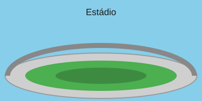

História

O Flamengo foi fundado em 17 de novembro de 1895, no bairro do Flamengo, no Rio de Janeiro. Inicialmente um clube de regatas, o futebol só passou a fazer parte de suas atividades em 1911, rapidamente se tornando a modalidade mais popular do clube.
Ao longo de sua história, o clube construiu uma das maiores torcidas do mundo, sendo reconhecido como o time com maior número de torcedores no Brasil.
Principais Títulos
- Campeão Brasileiro (8 vezes)
- Copa Libertadores da América (3 vezes)
- Campeão Carioca (mais de 30 vezes)
Elenco
Confira abaixo alguns dos ídolos que vestiram a camisa rubro-negra ao longo da história.
Contato
Ninho do Urubu — Centro de Treinamento George Helal
Rio de Janeiro, RJ